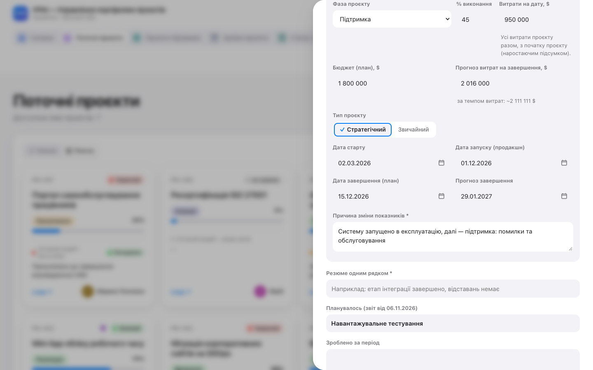
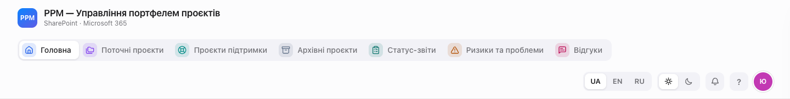
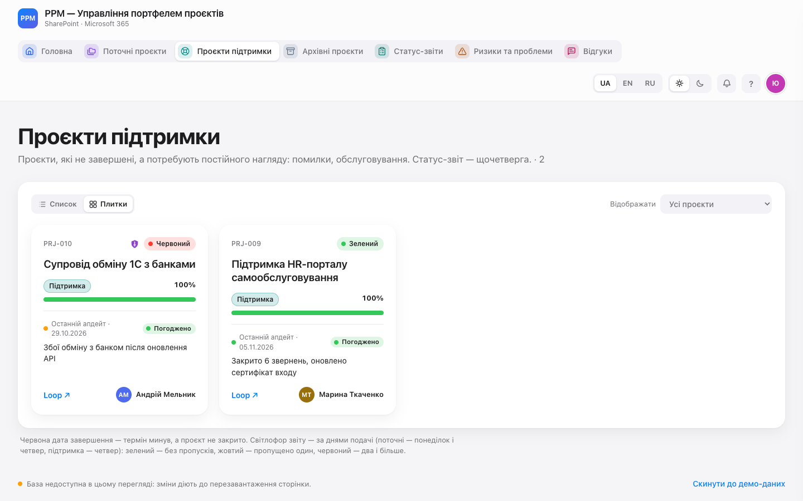
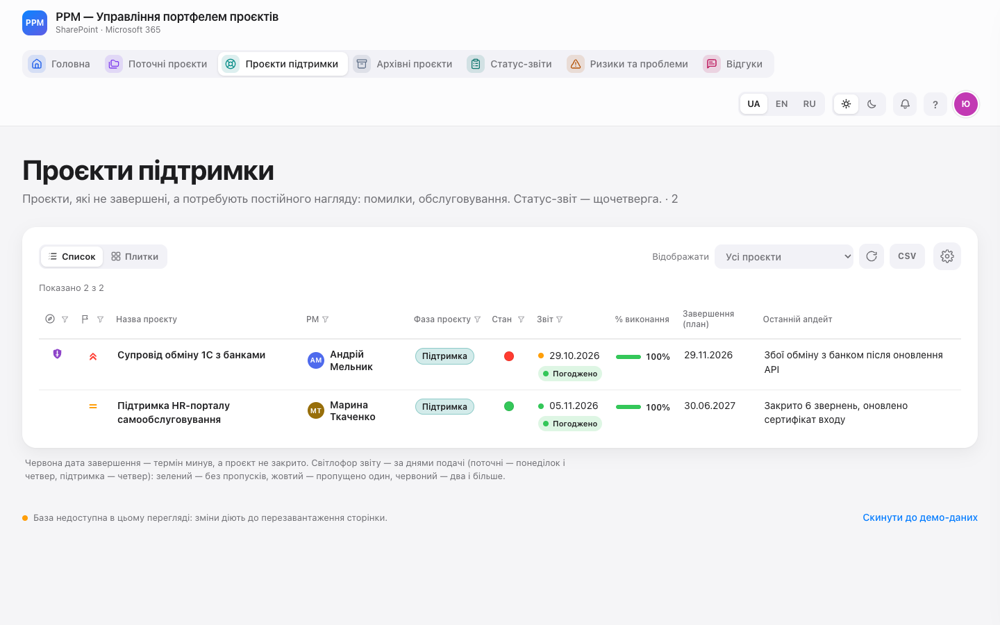
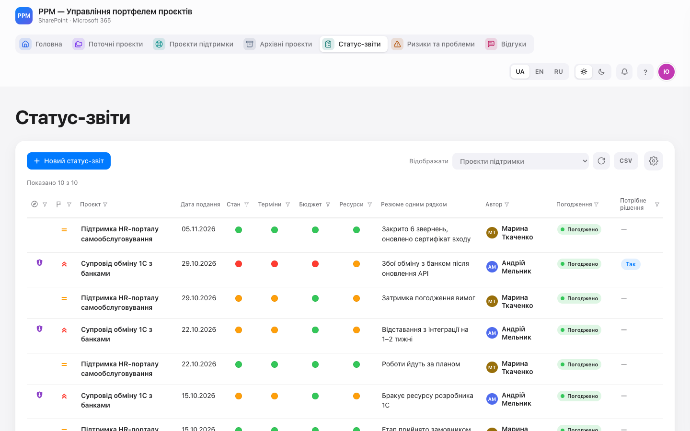
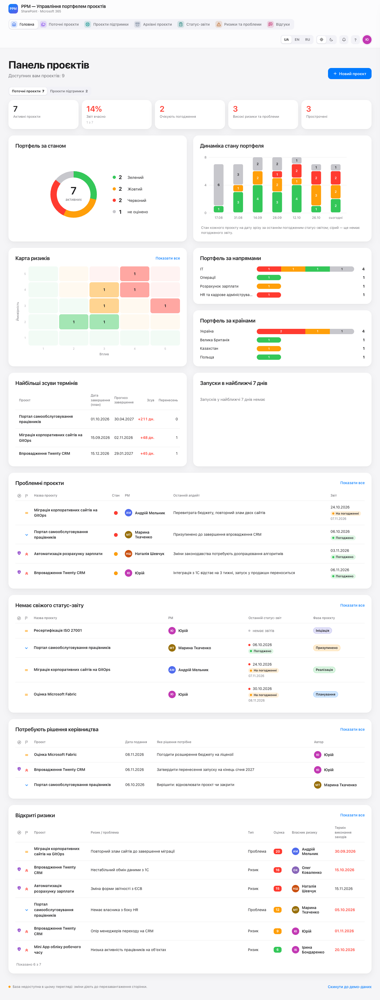
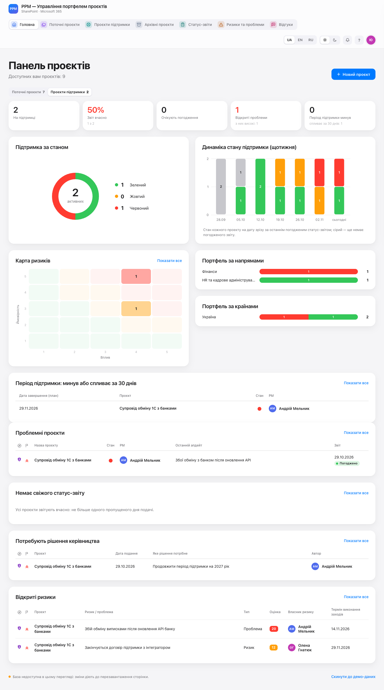
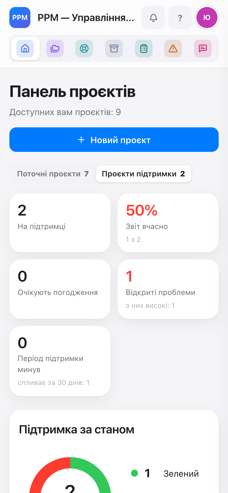

<title>Проєкти підтримки в порталі</title>
<meta name="claude:viewport-fit-sides" content="cover">
<link rel="preconnect" href="https://fonts.googleapis.com">
<link rel="stylesheet" href="https://fonts.googleapis.com/css2?family=Roboto:wght@400;500;700;900&display=swap">
<style>
/* Макет: документ для PMO про фазу «Підтримка» — шапка, картки-розділи, кроки, таблиці, скриншоти прототипу. Палітра — як у пам'ятках PPM (eclectic.group). */
:root{
  --bg:#F6F5F8; --paper:#FFFFFF; --ink:#141217; --text:#3D3A44; --muted:#7A7682; --line:#E2DFE8; --soft:#F1EFF5;
  --coral:#F2805F; --violet:#8C6CCB; --violet-soft:#EEE8FA; --coral-soft:#FFEDE7; --ok:#2E9E57; --warn:#C98A0B; --ok-soft:#E7F5EC; --bad:#D9443B; --bad-soft:#FCEBEA;
  --head:#0D0D0D; --head-text:#FFFFFF; --head-muted:#B9B4C2; --head-lead:#D9D5E0; --font:"Roboto","Segoe UI",Arial,sans-serif;
}
@media (prefers-color-scheme: dark){ :root:not([data-theme="light"]){
  --bg:#121114; --paper:#1B1A1F; --ink:#F3F1F7; --text:#CFCBD6; --muted:#9A95A3; --line:#2F2C36; --soft:#24222A;
  --coral:#FF957A; --violet:#AA8EE6; --violet-soft:#2C2540; --coral-soft:#3A2620; --ok:#45C06E; --warn:#F2B233; --ok-soft:#1D3325; --bad:#F0675E; --bad-soft:#3A2321; --head:#000; color-scheme:dark } }
:root[data-theme="dark"]{
  --bg:#121114; --paper:#1B1A1F; --ink:#F3F1F7; --text:#CFCBD6; --muted:#9A95A3; --line:#2F2C36; --soft:#24222A;
  --coral:#FF957A; --violet:#AA8EE6; --violet-soft:#2C2540; --coral-soft:#3A2620; --ok:#45C06E; --warn:#F2B233; --ok-soft:#1D3325; --bad:#F0675E; --bad-soft:#3A2321; --head:#000; color-scheme:dark }
*{box-sizing:border-box}
body{background:var(--bg);color:var(--text);font:15px/1.6 var(--font);margin:0}
.band{background:var(--head);color:var(--head-text);padding-left:max(16px,env(safe-area-inset-left,0px));padding-right:max(16px,env(safe-area-inset-right,0px));padding-block:36px 30px}
.in,.wrap{max-width:860px;margin:0 auto}
.stripe{height:4px;background:linear-gradient(90deg,var(--coral) 0 50%,var(--violet) 50% 100%)}
.eyebrow{font:500 12px/1 var(--font);letter-spacing:.12em;text-transform:uppercase;color:var(--head-muted)}
h1{font:900 clamp(26px,5vw,40px)/1.08 var(--font);text-transform:uppercase;margin:12px 0 10px;text-wrap:balance}
.lead{max-width:64ch;color:var(--head-lead);margin:0;font-size:16px}
.wrap{padding-left:max(16px,env(safe-area-inset-left,0px));padding-right:max(16px,env(safe-area-inset-right,0px));padding-block:28px 56px;display:grid;gap:22px}
h2{font:900 14px/1.2 var(--font);letter-spacing:.08em;text-transform:uppercase;color:var(--ink);margin:0 0 10px;display:flex;align-items:center;gap:10px;text-wrap:balance}
h2::before{content:"";width:4px;height:17px;background:var(--coral);border-radius:2px;flex:none}
h2 .who{font:500 11px/1 var(--font);letter-spacing:.06em;padding:5px 8px;border-radius:999px;background:var(--violet-soft);color:var(--ink)}
.card{background:var(--paper);border:1px solid var(--line);border-radius:12px;padding:18px 20px;min-width:0}
.card > p{margin:0 0 10px;max-width:68ch}
.stats{display:grid;grid-template-columns:repeat(auto-fit,minmax(150px,1fr));gap:10px;margin-top:6px}
.stat{background:var(--soft);border-radius:10px;padding:12px 14px}
.stat b{display:block;font:900 26px/1 var(--font);color:var(--ink);font-variant-numeric:tabular-nums}
.stat span{display:block;font-size:13px;margin-top:6px;line-height:1.35}
.note{font-size:13px;color:var(--muted);margin:10px 0 0}
.step{display:grid;grid-template-columns:36px minmax(0,1fr);gap:14px;padding:14px 0;border-top:1px solid var(--line)}
.step:first-of-type{border-top:0;padding-top:4px}
.n{width:28px;height:28px;border-radius:50%;background:var(--coral-soft);color:var(--ink);font:700 14px/28px var(--font);text-align:center;font-variant-numeric:tabular-nums}
.step h3{font:700 15px/1.35 var(--font);color:var(--ink);margin:3px 0 6px}
.step p{margin:0 0 8px;max-width:66ch}
.path{display:inline-block;font:500 13px/1.4 var(--font);background:var(--soft);border:1px solid var(--line);border-radius:6px;padding:2px 7px;color:var(--ink)}
.ex{display:grid;grid-template-columns:minmax(0,1fr) minmax(0,1fr);gap:8px;margin-top:6px}
.ex div{border-radius:8px;padding:8px 11px;font-size:13.5px;line-height:1.45}
.ex .yes{background:var(--ok-soft)} .ex .no{background:var(--bad-soft)}
.ex b{display:block;font-size:11px;letter-spacing:.06em;text-transform:uppercase;margin-bottom:2px}
.ex .yes b{color:var(--ok)} .ex .no b{color:var(--bad)}
.rule{display:grid;grid-template-columns:repeat(3,minmax(0,1fr));gap:8px;margin-top:6px}
.rule div{border-radius:8px;padding:9px 11px;font-size:13.5px;background:var(--soft)}
.rule b{display:block;color:var(--ink);font-size:13px}
.dot{display:inline-block;width:9px;height:9px;border-radius:50%;margin-right:6px;vertical-align:0}
.tbl{overflow-x:auto}
table{width:100%;border-collapse:collapse;font-size:13.5px;min-width:560px}
th,td{text-align:left;vertical-align:top;padding:9px 10px;border-top:1px solid var(--line)}
th{font:700 11px/1.3 var(--font);letter-spacing:.06em;text-transform:uppercase;color:var(--muted);border-top:0}
td:first-child{font-weight:700;color:var(--ink)}
.faq dt{font-weight:700;color:var(--ink);margin-top:12px}
.faq dt:first-child{margin-top:0}
.faq dd{margin:4px 0 0;max-width:68ch}
ul{margin:4px 0 0;padding-left:20px} li{margin:4px 0}
.shot{margin:12px 0 4px;display:grid;gap:8px}
.shot img{display:block;width:auto;max-width:min(100%,520px);height:auto;border:1px solid var(--line);border-radius:10px;background:var(--paper)}
.legend{list-style:none;margin:0;padding:0;display:grid;gap:4px;font-size:13.5px}
.legend li{display:grid;grid-template-columns:24px minmax(0,1fr);gap:8px;align-items:baseline;margin:0}
.legend b{display:inline-block;width:22px;height:22px;border-radius:50%;background:var(--coral);color:#fff;font:700 12px/22px var(--font);text-align:center}
.ceo{display:grid;gap:8px}
@media print{ .shot{break-inside:avoid} .ex,.rule,.stat,tr,.stats{break-inside:avoid} h2,h3{break-after:avoid} .card{break-inside:auto} }
@media (max-width:600px){ .ex,.rule{grid-template-columns:1fr} .step{grid-template-columns:30px minmax(0,1fr);gap:10px} }

.shot.wide img{max-width:100%}
.lights{list-style:none;padding:0;margin:6px 0 0;display:grid;gap:4px}
.lights li{margin:0}
.lights b{color:var(--ink)}
.shot figcaption{font-size:13px;color:var(--muted)}
.days{display:grid;grid-template-columns:repeat(7,minmax(0,1fr));gap:4px;margin:8px 0 2px;font-size:12.5px;text-align:center}
.days span{background:var(--soft);border-radius:6px;padding:6px 2px;color:var(--muted)}
.days .due{background:var(--violet-soft);color:var(--ink);font-weight:700}
.tag{display:inline-block;font:500 12px/1 var(--font);padding:4px 8px;border-radius:999px;background:var(--violet-soft);color:var(--ink)}
@media (max-width:600px){ .days{font-size:11px} }
</style>

<header>
  <div class="band"><div class="in">
    <div class="eyebrow">PPM · для PMO · проєкт рішення · 09.11.2026</div>
    <h1>Проєкти підтримки в порталі</h1>
    <p class="lead">Нова фаза проєкту «Підтримка» — для проєктів, які не завершені, а потребують постійного нагляду: помилки, обслуговування, дрібні зміни. Такі проєкти отримують свою вкладку, свій режим головної сторінки і щотижневий статус-звіт по четвергах. Поточні проєкти звітують у понеділок і четвер. Скриншоти — з прототипу на демо-даних.</p>
  </div></div>
  <div class="stripe"></div>
</header>

<main class="wrap">

  <section class="card">
    <h2>Коротко</h2>
    <div class="stats">
      <div class="stat"><b>1</b><span>нова фаза проєкту — «Підтримка»</span></div>
      <div class="stat"><b>3</b><span>вкладки проєктів: поточні, підтримки, архівні</span></div>
      <div class="stat"><b>2</b><span>режими головної: поточні проєкти і проєкти підтримки</span></div>
      <div class="stat"><b>пн · чт / чт</b><span>дні статус-звіту: поточні / підтримка</span></div>
    </div>
    <p class="note">Права, журнал змін, сповіщення і погодження PMO працюють так само, як зараз. Нових полів у картці проєкту немає.</p>
  </section>

  <section class="card">
    <h2>Що таке фаза «Підтримка»</h2>
    <p>«Фаза проєкту» має сім значень: Ініціація, Планування, Реалізація, <b>Підтримка</b>, Призупинено, Завершено, Скасовано. «Підтримка» стоїть після «Реалізації»: систему запущено, а команда далі виправляє помилки, обслуговує її і робить дрібні зміни.</p>
    <ul>
      <li>Проєкт на підтримці активний. Його веде PM, як і зараз: звіти, ризики, команда, посилання.</li>
      <li>Контроль ручний, як у поточних проєктів: оцінки «Терміни», «Бюджет», «Ресурси» у статус-звіті, бюджет (план) і прогноз витрат.</li>
      <li>«Дата завершення (план)» для проєкту підтримки — кінець періоду підтримки (наприклад, договору). Коли дата минула, портал показує це на головній.</li>
      <li>Проєкт на підтримці не може одночасно бути «Призупинено»: пауза — це зміна фази на «Призупинено».</li>
    </ul>
  </section>

  <section class="card">
    <h2>Як проєкт переходить у підтримку <span class="who">PM → PMO</span></h2>
    <div class="step"><div class="n">1</div><div>
      <h3>PM подає статус-звіт із фазою «Підтримка»</h3>
      <p>У блоці «Ключові показники» PM вибирає «Фаза проєкту» — «Підтримка» і пише причину (обов'язково, як для будь-якої зміни фази). У тому ж звіті варто оновити «Дату завершення (план)» — кінець періоду підтримки, а також бюджет і прогноз на цей період.</p>
      <figure class="shot wide"><figcaption>Форма статус-звіту: фаза «Підтримка», причина зміни обов'язкова.</figcaption></figure>
    </div></div>
    <div class="step"><div class="n">2</div><div>
      <h3>PMO погоджує звіт</h3>
      <p>Як зараз: погодити, погодити зі зміною оцінок або повернути на доопрацювання. До погодження проєкт лишається у «Поточних проєктах».</p>
    </div></div>
    <div class="step"><div class="n">3</div><div>
      <h3>Проєкт переходить у вкладку «Проєкти підтримки»</h3>
      <p>Після погодження фаза в картці змінюється, у журналі з'являється запис «Фаза проєкту: Реалізація → Підтримка» з причиною. З цього дня проєкт звітує щочетверга.</p>
    </div></div>
    <p class="note">Назад так само: звіт із фазою «Реалізація» (велика доробка) або «Завершено» / «Скасовано» (період підтримки закінчився, проєкт іде в архів). Окремої кнопки немає.</p>
  </section>

  <section class="card">
    <h2>Три вкладки проєктів</h2>
    <figure class="shot wide"></figure>
    <div class="tbl"><table>
      <thead><tr><th>Вкладка</th><th>Що в ній</th><th>Було</th></tr></thead>
      <tbody>
        <tr><td>Поточні проєкти</td><td>активні проєкти, крім підтримки: Ініціація, Планування, Реалізація, Призупинено</td><td>«Проєкти» (разом із майбутньою підтримкою)</td></tr>
        <tr><td>Проєкти підтримки</td><td>проєкти у фазі «Підтримка»; ті самі плитки, список і представлення, що й у поточних</td><td>—</td></tr>
        <tr><td>Архівні проєкти</td><td>Завершено і Скасовано, лише перегляд</td><td>«Архів»</td></tr>
      </tbody>
    </table></div>
    <figure class="shot wide"><figcaption>«Проєкти підтримки», плитки. Колір крапки біля дати — свіжість звіту за четвергами.</figcaption></figure>
    <figure class="shot wide"><figcaption>Те саме списком: колонки, фільтри, сортування і CSV — як у «Поточних проєктах».</figcaption></figure>
    <p>У «Статус-звітах» і «Ризиках та проблемах» з'являються представлення за категорією: «Проєкти підтримки», «Підтримка — очікують погодження», «Підтримка — відкриті проблеми», «Поточні — очікують погодження», «Поточні — високі ризики та проблеми» тощо. Саме в них ведуть показники головної, тому число на плитці збігається зі списком.</p>
    <figure class="shot wide"><figcaption>«Статус-звіти» → «Відображати: Проєкти підтримки» — щотижневі звіти.</figcaption></figure>
  </section>

  <section class="card">
    <h2>Головна: два режими</h2>
    <p>Під заголовком — перемикач «Поточні проєкти / Проєкти підтримки» з кількістю проєктів. Портал запам'ятовує вибір. У кожному режимі всі показники, діаграми, черга погодження і таблиці рахуються лише за своїми проєктами. Кнопки «Показати все» і показники ведуть у вкладку свого режиму.</p>
    <h3>Режим «Поточні проєкти»</h3>
    <p>Те саме, що зараз, але без проєктів підтримки. Показник «Зі свіжим звітом» стає «Звіт вчасно» (за правилом днів подачі, див. нижче).</p>
    <figure class="shot wide"></figure>
    <h3>Режим «Проєкти підтримки»</h3>
    <div class="tbl"><table>
      <thead><tr><th>Блок</th><th>Що показує</th></tr></thead>
      <tbody>
        <tr><td>На підтримці</td><td>скільки проєктів у фазі «Підтримка»</td></tr>
        <tr><td>Звіт вчасно</td><td>частка проєктів без пропущеного четверга</td></tr>
        <tr><td>Очікують погодження</td><td>звіти підтримки на погодженні (бачить PMO)</td></tr>
        <tr><td>Відкриті проблеми</td><td>відкриті записи типу «Проблема» в реєстрі; окремо — скільки з них високих (оцінка 15–25)</td></tr>
        <tr><td>Період підтримки минув</td><td>«Дата завершення (план)» уже минула; окремо — скільки спливає за 30 днів</td></tr>
        <tr><td>Підтримка за станом, динаміка</td><td>кільце стану і динаміка зі зрізами щотижня</td></tr>
        <tr><td>Карта ризиків, напрями, країни</td><td>як у поточних, але лише по підтримці</td></tr>
        <tr><td>Період підтримки: минув або спливає за 30 днів</td><td>замість «Найбільших зсувів термінів» і «Запусків у найближчі 7 днів» — у підтримки запуску немає</td></tr>
        <tr><td>Проблемні, без свіжого звіту, рішення, ризики</td><td>ті самі таблиці, лише проєкти підтримки</td></tr>
      </tbody>
    </table></div>
    <figure class="shot wide"></figure>
    <p class="note">«Динаміка» поточних проєктів показує проєкти без тих, що зараз на підтримці, — за весь період. Після переведення проєктів у підтримку історія поточних перерахується. «Динаміка» підтримки на минулі дати показує проєкти, які зараз на підтримці, зокрема за звітами до переходу.</p>
  </section>

  <section class="card">
    <h2>Коли подавати звіт і як рахується свіжість</h2>
    <p>Зараз портал вважає звіт свіжим до 8 днів. Це не відповідає практиці: PM звітують двічі на тиждень. Нове правило — за днями подачі.</p>
    <div class="rule">
      <div><b>Поточні проєкти</b>понеділок і четвер</div>
      <div><b>Проєкти підтримки</b>четвер</div>
      <div><b>Що рахується</b>лише погоджений PMO звіт, за датою подання</div>
    </div>
    <p style="margin-top:12px">День подачі вважається пропущеним, якщо він минув, а погодженого звіту, поданого цього дня або пізніше, немає. У сам день подачі пропуску ще немає — до кінця дня.</p>
    <ul class="lights">
      <li><span class="dot" style="background:var(--ok)"></span><span><b>Зелений</b> — пропусків немає</span></li>
      <li><span class="dot" style="background:var(--warn)"></span><span><b>Жовтий</b> — пропущено один день подачі</span></li>
      <li><span class="dot" style="background:var(--bad)"></span><span><b>Червоний</b> — два і більше; проєкт потрапляє в «Немає свіжого звіту»</span></li>
      <li><span class="dot" style="background:var(--muted)"></span><span><b>Сірий</b> — погоджених звітів ще немає</span></li>
    </ul>
    <h3>Приклад: поточний проєкт, звіт поданий у понеділок</h3>
    <div class="days"><span class="due">пн · звіт</span><span>вт</span><span>ср</span><span class="due">чт</span><span>пт</span><span>сб</span><span>нд</span></div>
    <p class="note">До четверга включно — зелений. У п'ятницю (четвер пропущено) — жовтий. З наступного вівторка (пропущено ще й понеділок) — червоний.</p>
    <h3>Приклад: проєкт підтримки, звіт поданий у четвер</h3>
    <p class="note">Зелений до наступного четверга включно. У п'ятницю — жовтий. Ще через тиждень, у п'ятницю, — червоний.</p>
    <h3>Звіт на погодженні</h3>
    <p>Свіжість рахується лише за погодженими звітами (рішення 09.11). Дата — день подання, тож звіт, поданий у понеділок і погоджений у середу, після погодження закриває понеділок. Поки звіт на погодженні, він не рахується: якщо PMO погоджує не в день подачі, з наступного дня проєкт жовтий, а два непогоджені звіти поспіль (понеділковий і четверговий) дають червоний, хоча PM усе подав. Після погодження колір відновлюється. Підказка біля крапки показує дату звіту на погодженні.</p>
    <p class="note">Щоб колір показував дисципліну PM, а не черги погодження, PMO погоджує звіти в день подачі.</p>
    <p class="note">Перевірено на 22 прикладах (дні тижня, перехід через рік, звіт поза днем подачі) — однакових для прототипу, а потім і для порталу.</p>
  </section>

  <section class="card">
    <h2>На телефоні</h2>
    <p>Вкладки в шапці — іконками, перемикач режимів головної — під заголовком.</p>
    <figure class="shot"></figure>
  </section>

  <section class="card">
    <h2>Що не змінюється</h2>
    <ul>
      <li>Права: проєкт підтримки редагує лише PM; керівники, власник, стейкхолдери, CEO країни — перегляд і коментарі.</li>
      <li>Погодження PMO, один звіт «на погодженні» на проєкт, журнал змін, сповіщення в дзвіночку.</li>
      <li>Поля картки і статус-звіту — ті самі.</li>
    </ul>
  </section>

  <section class="card">
    <h2>Пізніше, не в цьому випуску</h2>
    <ul>
      <li>Години кожного ресурсу на проєкті підтримки і бюджет у межах цих годин.</li>
      <li>Терміни за завданнями з helpdesk (план R8).</li>
      <li>Нагадування листом про пропущений звіт (зараз вимкнені).</li>
    </ul>
  </section>

  <section class="card">
    <h2>Як далі</h2>
    <div class="step"><div class="n">1</div><div><h3>PMO перевіряє цей документ</h3><p>Зауваження — власнику порталу. Окремий документ — що треба зробити команді проєктів і керівнику.</p></div></div>
    <div class="step"><div class="n">2</div><div><h3>Доробка порталу на тестовому сайті</h3><p>Після погодження PMO: портал, синхронізація, інструкція користувача. Перевіряє фокус-група.</p></div></div>
    <div class="step"><div class="n">3</div><div><h3>Випуск на робочий портал</h3><p>Після приймання на тесті — за окремим рішенням власника.</p></div></div>
  </section>

</main>
